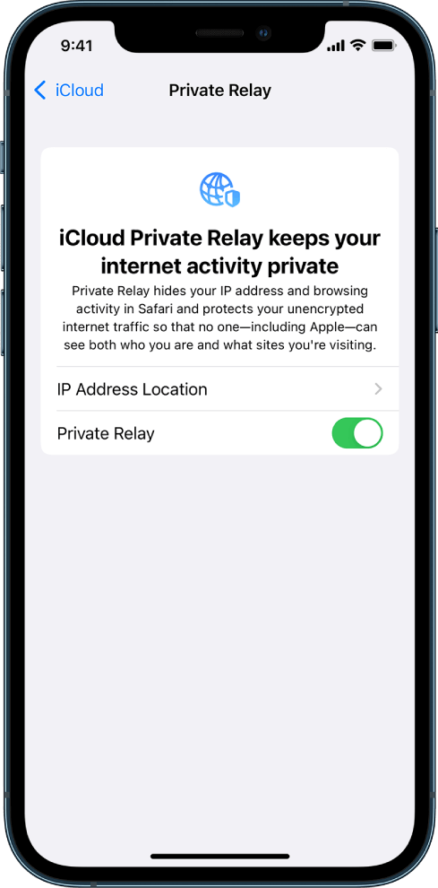
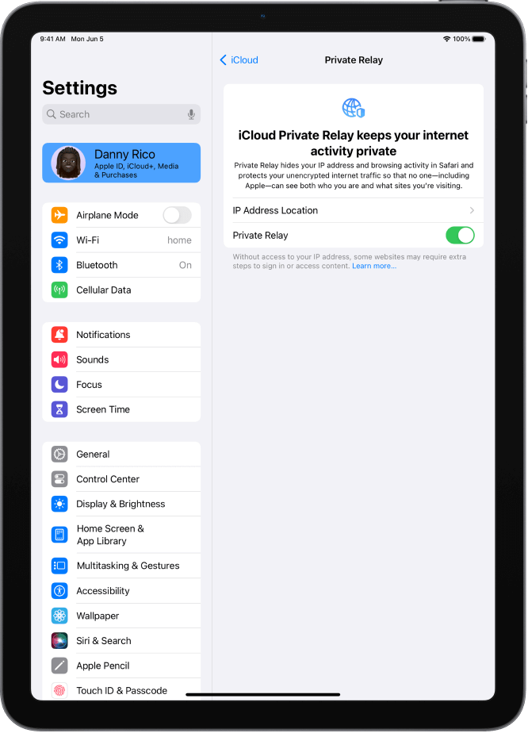

In 2019, a contact informed me that they were interviewed by the FBI for seven hours in 2006. They stated the interview was as much about Polly Klaas as JonBenet Ramsey. The FBI played numerous recorded calls from 2001 wherein I discussed Klaas in depth with an informant. The FBI stated that I had discussed details of Klaas with her killer in multiple conversations. I have a message for the FBI and Polly Klaas's killer in this article.
Please turn off Icloud Private Relay to view this site. Icloud Private Relay has been used to send death threats to me and other abuse. Because Icloud Private Relay visits are so prevalent on this site, I have taken this measure. If you feel this is an invasion of your privacy, do not enter this site. Your visit is important to me but my security is more important. Thank you for your cooperation.
On Iphone, go to Settings > [your name] > iCloud > Private Relay

On Ipad, go to Settings > [your name] > iCloud > Private Relay

Thank you for turning off Icloud Private Relay
TAP TO ENTER JOHNMARKKARR.COM


Copyright 2023 All Rights Reserved